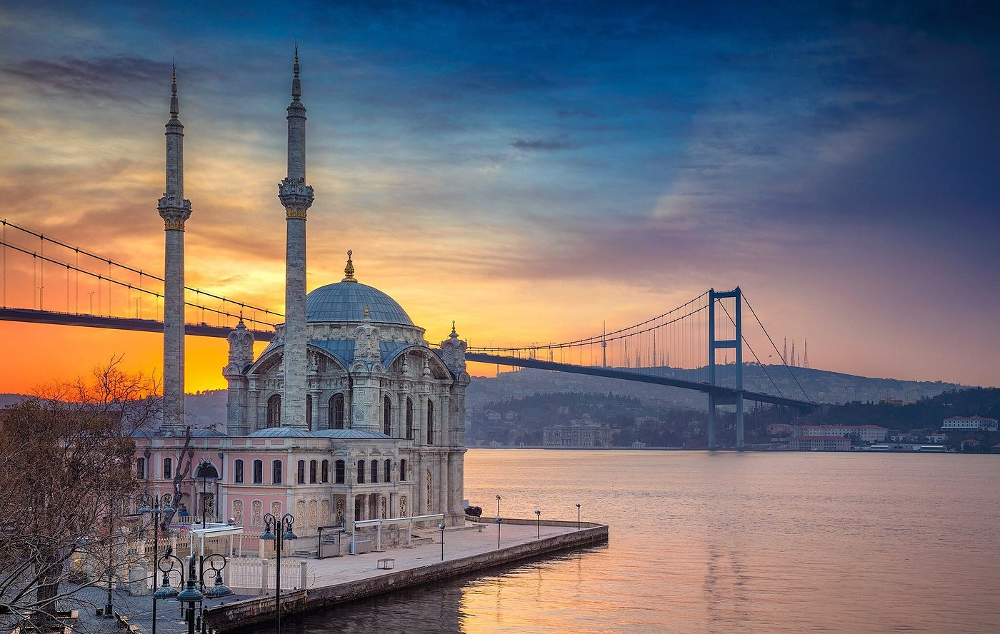
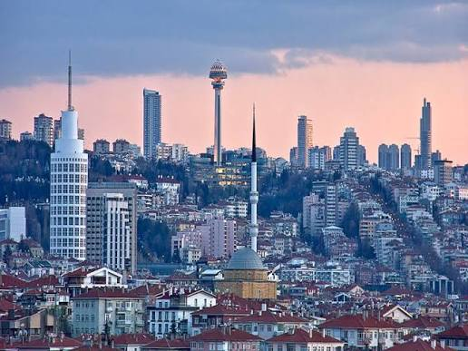
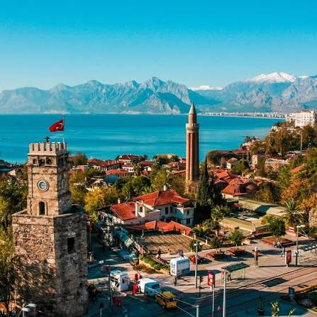
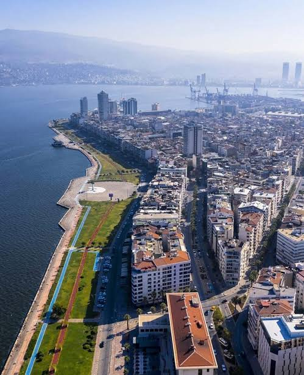

إسطنبول: أكبر مدينة في تركيا ومركزها الاقتصادي والثقافي والتاريخي، وتتميز بكونها المدينة الوحيدة في العالم التي تمتد على قارتي أوروبا وآسيا عبر مضيق البوسفور. يبلغ عدد سكانها أكثر من 15 مليون نسمة، ورغم أهميتها ومكانتها العالمية إلا أن العاصمة الرسمية للبلاد هي أنقرة.

أنقرة: هي العاصمة الرسمية لتركيا ومركزها السياسي والإداري، وتُعد ثاني أكبر مدن البلاد من حيث عدد السكان بعد إسطنبول. يبلغ عدد سكانها نحو 5.91 مليون نسمة (وفق بيانات عام 2025)، وتقع في قلب هضبة الأناضول بعيداً عن السواحل البحرية.

أنطاليا: عاصمة السياحة التركية وأكبر منتجع ساحلي دولي على سواحل البحر الأبيض المتوسط في جنوب غرب تركيا. يبلغ عدد سكانها نحو 2.81 مليون نسمة (وفق تقديرات عام 2026)، وتشتهر بمزيج يجمع بين الشواطئ الفيروزية وجبال طوروس والآثار التاريخية

إزمير :ثالث أكبر مدينة في تركيا ولقبها الشهير هو "لؤلؤة بحر إيجه"، وتتميز بكونها أكبر ميناء للتصدير وثاني أكبر مركز صناعي في البلاد بعد إسطنبول. يبلغ عدد سكان محافظة إزمير نحو 4.5 مليون نسمة (وفق تقديرات نهاية عام 2025)، وتشتهر بأجوائها الساحلية العصرية وتاريخها الممتد لآلاف السنين.

تُلقب بورصة :بـ "بورصة الخضراء"نظراً لكثرة حدائقها ومتنزهاتها ومساحاتها الطبيعية الواسعة، وتُعد رابع أكبر مدينة في تركيا من حيث عدد السكان (يبلغ عدد سكانها نحو 3.1 إلى 3.3 مليون نسمة في المحافظة). تقع في شمال غرب تركيا على سفوح جبل أولوداغ وتطل على بحر مرمرة